해양공학기사 (2004-05-23 기출문제)
1과목: 해양학개론
1. 해수 중 용존기체의 해양-대기간 기체교환에 관계가 가장 적은 것은?
- 기체의 확산계수
- 대기와 표층수의 기체분압차이
- 해수표면막의 두께
- 표층수의 이온강도(ionic strength)
(정답률: 알수없음)

2. 다음 중 표층 해류 생성의 주된 원인이 되는 것은?
- 해양-대기 열수지
- 바람
- 밀도구조
- 지구자전
(정답률: 알수없음)
3. 직경이 62.5㎛이하의 퇴적물을 입도분석하는 방법은 어떤 것이 가장 적절한가?
- Sieve방법
- Pippette방법
- Turbidity방법
- 물리탐사법
(정답률: 알수없음)
4. 일반적인 해수 중의 무기성분 분포 함량을 표시한 것 중 가장 올바른 것은?
- Na+＞Ca2+＞Mg2+, Cl-＞HCO3-＞SO42-
- Na+＞Mg2+＞Ca2+, Cl-＞SO42-＞HCO3-
- Mg2+＞Na+＞Ca2+, Cl-＞SO42-＞HCO3-
- Mg2+＞Ca2+＞Na+, Cl-＞HCO3-＞SO42-
(정답률: 알수없음)
5. 다음 중 방사성 핵종의 붕괴방정식으로 맞는 것은? (단, A는 시간 t경과후 방사능 농도, Ao는 초기의 방사능 농도, λ 는 붕괴상수, t는 시간 이다.)
- A = Ao × (-λ t)
- Ao = A × (-λ t)
- Ao = Ae-λt
- A = Aoe-λt
(정답률: 알수없음)
6. 대양저의 열류량에 대한 일반적인 양상 중 틀린 것은?
- 대서양 중앙해저 산맥에서는 높은 열류량을 나타낸다
- 동태평양 해팽에서는 낮은 열류량을 나타낸다.
- 해구에서는 낮은 열류량을 나타낸다.
- 해저산맥의 측면을 따라 열류량이 작은 지역이 띠를 이룬다.
(정답률: 알수없음)
7. 다음 중 반원양성(Hemi-pelagic) 퇴적환경인 곳은?
- 대양저
- 대륙붕
- 대양대지
- 해구
(정답률: 알수없음)
8. 하와이 동남부에 위치한 망간단괴가 풍부한 C-C Zone은 지질 구조상 다음 중 어느 것에 해당하는가?
- 단열대
- 대양저 산맥
- 해구
- 대륙대
(정답률: 알수없음)
9. 대서양형 대륙주변부의 해저지형으로서 가장 수가 많고 많이 발달한 것은?
- 대륙붕 수로
- 삼각주 전면계곡
- 해저협곡
- 심해저 수로
(정답률: 알수없음)
10. 한반도 주변에 가장 흔한 점토광물은?
- kaolinite
- chlorite
- illite
- smectite
(정답률: 알수없음)
11. 연체동물이나 절족동물(arthropod)에 고농도로 함유되어 있는 원소는?
- 비소
- 철
- 알루미늄
- 칼슘
(정답률: 알수없음)
12. 해수 중의 음파의 전파 속도는?
- 수온이 높을수록 빠르고, 수압이 클수록 빠르다.
- 수온이 높을수록 느리고, 수압이 클수록 빠르다.
- 수온이 높을수록 빠르고, 수압이 클수록 느리다.
- 수온이 높을수록 느리고, 수압이 클수록 느리다.
(정답률: 알수없음)
13. 성층해수(stratified ocean)에서 해류속도가 수심에 따라 감소할 경우 밀도 경계면의 경사는 해면 경사와 비교하여 그 경사방향과 경사크기는?
- 같은 방향으로 같다.
- 같은 방향으로 더 크다.
- 반대 방향으로 같다.
- 반대 방향으로 더 크다.
(정답률: 알수없음)
14. 취송류에서 해면의 유향과 정반대의 유향이 되고 해면 유속의 약 4% 정도의 유속으로 감소되는 심도는?
- 역학심도
- 마찰심도
- 무류면
- 보상심도
(정답률: 알수없음)
15. 수준면(Level Surface)이란?
- 중력포텐샬(potential)이 모든 곳에서 같은 면이다.
- 수온이 모든 곳에서 같은 면이다.
- 염분이 모든 곳에서 같은 면이다.
- 수온 및 염분이 모든 곳에서 같은 면이다.
(정답률: 알수없음)
16. 지구상에 일어나는 조석(潮汐) 중, 다음 어느 경우가 최소 조차를 보이는가?
- 달과 태양의 위치가 지구에 대해 서로 반대방향으로 일직선상에 있을 때
- 달과 태양의 위치가 지구에 대해 직각을 이룰때
- 달과 태양의 위치가 지구에 대해 같은 방향으로 일직선상에 있을 때
- 달과 태양의 위치가 지구에 대해 45° 각도를 이룰 때
(정답률: 알수없음)
17. 대마난류와 무관한 것은?
- 쿠로시오의 한 지류다.
- 한반도 남동해안과 일본서안을 따라 북상한다.
- 수온이 높은 해수를 동해에 유입시킨다.
- 염분도가 낮은 해수를 동해에 유입시킨다.
(정답률: 알수없음)
18. 북반구에 존재하는 동안류와 서안류를 비교 기술한 것 중 사실과 다른것은?
- 동안류는 폭이 넓고 서안류는 폭이 좁다.
- 해류층의 두께가 동안류는 얇고 서안류는 두껍다.
- 동안류는 편서풍대에서 흘러오며, 저온, 저염분이고 서안류는 무역풍대에서 흘러오며 고온, 고염분이다.
- 연안류와의 경계가 모두 분명하다.
(정답률: 알수없음)
19. 지형류(Geostrophic currents)에서 균형을 이루는 힘이 아닌 것은?
- 중력
- 마찰력
- 압력경도력
- 코리올리 힘
(정답률: 알수없음)
20. 해양의 표면염분 분포에 가장 큰 영향을 주는 것은?
- 증발-강수량의 차
- 바람분포
- 수온분포
- 심층해류
(정답률: 알수없음)
2과목: 해양수리학
21. 해빈에 관한 다음 설명중 옳지 못한 것은?
- 해안선으로 부터 외해쪽의 모래 또는 자갈부분을 해빈이라 한다.
- 해수면과 해빈과의 경계선을 정선(汀線)이라고 한다.
- 해빈의 퇴적시 외빈과 원빈의 경계 부근에 작은 사구가 형성된다.
- 해빈은 원빈, 외빈, 전빈, 후빈 등으로 대별된다.
(정답률: 알수없음)
22. 조석현상중 대조와 소조에 대한 설명으로 옳은 것은?
- 평균태양일과 평균태음일의 길이가 다르기 때문에 발생한다.
- 대조란 하루중 해면의 높이가 가장 높을때를 말한다.
- 대조시에는 일조부등이 가장 커진다.
- 달이 지구에 가까울때 대조, 가장 먼곳에 있을때 소조가 발생한다.
(정답률: 알수없음)
23. 속도V와 시간T에 관한 Froude 모형법칙은 다음중 어느 것인가? (L : 길이)
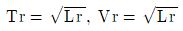
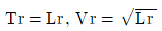
- Tr=Lr, Vr=Lr
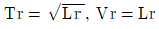
(정답률: 알수없음)
24. 수리학에서 모형법칙으로 가장 많이 이용되는 상사법칙은 다음 중 어느 것인가?
- Froude, Reynolds의 상사법칙
- Weber의 상사법칙
- Cauchy의 상사법칙
- Weber, Cauchy의 상사법칙
(정답률: 알수없음)
25. 속도포텐셜을 갖는 흐름에 대한 다음의 기술 중 옳은 것은?
- 흐름이 비회전성이다.
- 흐름이 회전성이다.
- 속도포텐셜과 흐름의 회전성 여부는 관련이 없다.
- 흐름의 회전성 여부는 속도포텐셜외에 다른 조건이 있어야 판별된다.
(정답률: 알수없음)
26. 하구에서 장기적으로 오염물질의 확산과 가장 밀접한 관계가 있는 사항은?
- 항류에 의한 순환
- 밀물
- 썰물
- 파랑
(정답률: 알수없음)
27. 달과 지구의 운동에 있어서 신월(New moon)과 만월(Full moon)일때 일어나는 현상을 옳게 기술한 것은?
- 기조력은 최소가 되며 최소의 조차를 나타낸다.
- 기조력은 최소가 되며 최대의 조차를 나타낸다.
- 기조력은 최대가 되며 최소의 조차를 나타낸다.
- 기조력은 최대가 되며 최대의 조차를 나타낸다.
(정답률: 알수없음)
28. 항만 구조물의 설계시 표사에 대한 대책을 틀리게 서술한 것은?
- 방파제는 표사의 이동이 없는 수심까지 연장하는 것이 좋다.
- 항만 구조물의 설계시 표사이동은 큰 문제가 되지 않는다.
- 표사의 원인, 특성을 사전에 조사 연구하고, 그 특성에 맞는 구조물을 설계한다.
- 항구는 될 수 있는대로 표사의 영향이 없는 위치에 설치한다.
(정답률: 알수없음)
29. 연안의 수리현상에서 해면운동을 주기에 의해서 분류할 수 있다. 다음 중에서 주기의 크기순으로 옳게 나타낸 것은?
- 기상조＜표면장력파＜너울＜장주기파
- 표면장력파＜너울＜장주기파＜기상조
- 너울＜장주기파＜기상조＜표면장력파
- 장주기파＜기상조＜표면장력파＜너울
(정답률: 알수없음)
30. 담수중에서 유속 V=0.5m/sec, 투영단면적 A=0.6m3인 물체 가 놓여져 있을때 항력을 측정한 결과 D=93.75kg이었다. 이 물체의 항력계수는 얼마인가?
- 1.00
- 1.25
- 1.75
- 2.50
(정답률: 알수없음)
31. 다음 모래의 이동 한계수심이 가장 깊은 것 부터 얕은 순서로 나열된 것은?
- 초기이동한계수심, 포층이동한계수심, 전면이동한계수심, 완전이동한계수심
- 완전이동한계수심, 포층이동한계수심, 전면이동한계수심, 초기이동한계수심
- 초기이동한계수심, 전면이동한계수심, 표층이동한계수심, 완전이동한계수심
- 완전이동한계수심, 전면이동한계수심, 표층이동한계수심, 초기이동한계수심
(정답률: 알수없음)
32. 파랑의 발생은 보통바람에 의한 에너지의 전달로 설명되고 있다. 아래에 열거한 에너지전달 기구중 가장 큰 양을 차지하는 것은?
- 표면장력
- 전단력
- 탄성력
- 수직압력
(정답률: 알수없음)
33. 오리피스를 지나는 유체의 흐름을 수리모형실험으로 재현 할 경우 가장 중요한 상사법칙은?
- Froude 상사법칙
- Reynolds 상사법칙
- Weber 상사법칙
- Cauchy 상사법칙
(정답률: 알수없음)
34. 미소진폭파의 파형을 cosine파로 나타낸 경우 물입자의 수평방향 가속도가 최대인 경우는? (단, θ 는 위상각이고 파의 진행방향을 + 로 한다.)
- θ = 0
- θ = π/3
- θ = π/2
- θ = π
(정답률: 알수없음)
35. 흐름이 부유사를 많이 포함하게 되면 다음과 같은 부유사류의 특징을 나타내게 되는데 맞지 않는 것은?
- 마찰저항이 감소한다.
- 속도경사 du/dy가 감소하여 유속이 감소한다.
- 수류의 Karman정수가 0.4보다 작게 된다.
- 미세한 부유사 입자의 경우 수온의 하강은 부유사량을 증가 시킨다.
(정답률: 알수없음)
36. 직경이 작은 원주형 직립파일의 파랑에 의한 진동 현상을 설명하는 것중 틀린 것은?
- 진동의 진폭이 증가하면 항력 및 양력이 증가 한다.
- 진동의 진폭이 증가하면 항력은 증가하나 양력은 감소한다.
- Strouhal 주기 근처에서 파일 배면에 큰 와류가 발생한다.
- 자유 진동주기에서 와류에 의한 진동이 커진다.
(정답률: 알수없음)
37. 조석에 대한 다음 기술 중 옳지 않은 것은?
- 조석은 지표면의 위치에 대한 달과 태양의 위치변화에서 기인하는 중력차에 의해 유발된다.
- 조석현상을 설명하는 대표적인 이론으로는 평형조석론과 동력학적 조석론이 있다.
- 대조가 보름이나 그믐에 발생한다는 사실은 평형조석론으로 설명할 수 있다.
- 만조발생시각은 하루에 약 50분 빨라진다.
(정답률: 알수없음)
38. 파고 2m, 파장 80m, 주기 10sec의 sin파를 나타내는 진행파의 식을 옳게 나타낸 것은?
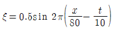
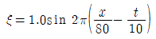
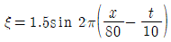
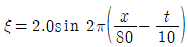
(정답률: 알수없음)
39. 쇄파고가 5m일때 물입자의 최대속도는?
- 2.4 m/sec
- 3.5 m/sec
- 4.9 m/sec
- 7.0 m/sec
(정답률: 알수없음)
40. 미소진폭파 이론의 가정이 올바른 것은?
- 비압축성, 비점성유체
- 압축성, 비점성유체
- 회전류
- 압축성, 점성유체
(정답률: 알수없음)
3과목: 해양구조공학
41. 다음과 같은 평면응력 상태에서 발생할 수 있는 최대 전단응력의 크기는?
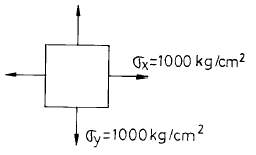
- 0 kg/cm2
- 707 kg/cm2
- 1000 kg/cm2
- 1414 kg/cm2
(정답률: 알수없음)
42. 사하중(dead load)작용하에서 모든 사재가 인장력을 받도록 구성된 트러스의 형태는?
- 핑크 트러스(Fink turss)
- 하우 트러스(Howe truss)
- 프랫트 트러스(Pratt truss)
- 와렌 트러스(Warren truss)
(정답률: 알수없음)
43. 주응력과 최대 전단응력의 설명 중 잘못된 것은?
- 주응력면과 최대전단응력면을 45°의 차이가 있다.
- 최대전단 응력면에서 수직응력은 생기지 않는다.
- 최대전단 응력면은 서로 직교한다.
- 주응력면은 서로 직교한다.
(정답률: 알수없음)
44. 다음의 물체를 넘어뜨리는데 필요한 최소의 힘 P의 크기는? (단, 물체는 미끄러지지 않는 다고 가정한다.)
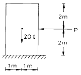
- 10 t
- 20 t
- 30 t
- 40 t
(정답률: 알수없음)
45. 파고 2m, 주기 12초, 수심 150m, 파장 224m인 해역에서 단위 폭당 파의 에너지 전달량은?
- 0.520 ton/sec
- 4.867 ton/sec
- 9.358 ton/sec
- 17.720 ton/sec
(정답률: 알수없음)
46. 다음 중 재화중량(財貨重量)을 옳게 설명한 것은?
- 선박의 크기를 나타내는 용어로 tonnage 이다.
- 화물 용적을 재는 단위로 100ft3당 1ton 이다.
- 배에 의해 배수되는 물의 량으로 displacement 이다.
- 선박에 의해 운송되는 화물로 dead weight 이다.
(정답률: 알수없음)
47. 다음 그림과 같이 양단 힌지인 장주에 압축력이 작용되어 탄성좌굴이 발생할 때, 이 단면의 좌굴응력은? (단, E = 2 × 106kg/cm2)
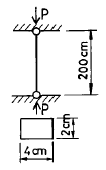
- 2624 kg/cm2
- 1312 kg/cm2
- 656 kg/cm2
- 164 kg/cm2
(정답률: 알수없음)
48. 경사식 해안구조물에 있어서 방파제의 안정성을 좌우하는 사석이나 블록의 가장 큰 요소들은?
- 크기, 경사(비탈)
- 형태, 비탈경사
- 크기, 강도
- 형태, 강도
(정답률: 알수없음)
49. 불규칙 해양파의 파고 분포 및 주기의 제곱 분포를 Rayleigh 분포로 가정할 때, 각 통계 파고간의 관계를 옳게 표시한 것은?
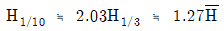
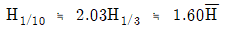
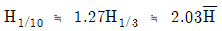
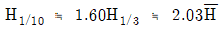
(정답률: 알수없음)
50. 탄성곡선의 미분방정식이 옳게 표시된 것은? (M = 모멘트, I = 단면 2차 모멘트, E = 탄성계수)
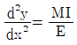
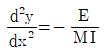
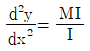
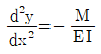
(정답률: 알수없음)
51. 사각형 단면의 보에서 전단응력의 변화를 바르게 표현한 것은?
- 일정
- 경사직선
- 2차포물선
- 3차곡선
(정답률: 알수없음)
52. 부두의 평면 형식 중 조차가 큰 항에서 적합한 형식은?
- 돌제식
- 박거식
- 섬식
- 평행식
(정답률: 알수없음)
53. 해양구조물의 고유 진동수를 증가시키려고 할 때 다음 중 옳은 것은?
- 구조물의 감쇠계수를 증가시킨다.
- 구조물의 질량을 증가시킨다.
- 구조물의 강도(强度)를 증가시킨다.
- 구조물의 강성도(剛性度)를 증가시킨다.
(정답률: 알수없음)
54. 쇄파대에 설치된 연직 방파제에 작용하는 파압은? (단, 파고는 2m, 수심 3m, 천단고 2.5m, 해수비중 1.03이다.)
- 7.7t
- 11.3t
- 17.0t
- 22.5t
(정답률: 알수없음)
55. 그림과 같이 강체인 AB부재가 D점을 중심으로 회전이 가능할 때 A단에 100t의 하중이 작용한다. 이 때 BC 강선에 작용하는 응력의 크기는? (단, BC 강선의 단면적은 6cm2이다.)
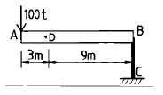
- 1.3 t/cm2
- 2.6 t/cm2
- 4.5 t/cm2
- 5.6 t/cm2
(정답률: 알수없음)
56. 그림과 같은 구조물에서 A점에서의 수직반력의 크기는?
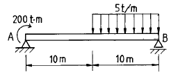
- 2.5 t
- 5.0 t
- 7.5 t
- 10.0 t
(정답률: 알수없음)
57. 다음 중 돌핀 구조상으로 적합치 않은 것은?
- 케이슨
- 우물통, 널말뚝
- 스프링 구조
- 혼성제 구조
(정답률: 알수없음)
58. 다음은 정정트러스의 부재력의 영향선에 관한 설명이다. 옳지 않은 것은?
- 격점과 이웃하는 격점 사이에서는 직선으로 나타난다.
- 어떤 부재에 대해서는 영향선도의 값이 + 또는 - 만으로 구성된다.
- 어떤 부재에 대해서는 영향선도의 값이 0 이 되는 구간이 있다.
- 영향선의 값은 -1과 1사이의 값을 취한다.
(정답률: 알수없음)
59. 수심 d, 파장 L 이라면 d/L는 파의 유체입자 운동형태를 결정한다. 유한 수심의 범위는?
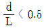
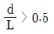
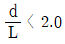
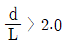
(정답률: 알수없음)
60. 수평면상에서 보았을 때 해안에 수직하게 설치되는 구조물은?
- 부두(wharf)
- 잔교(pier)
- 돌핀(dolphin)
- 안벽(quay wall)
(정답률: 알수없음)
4과목: 측량학
61. 가공선 및 교량의 높이를 측량하는 기준면은?
- 약최고 고조면
- 기본 수준면
- 평균해면
- 약최저 저조면
(정답률: 알수없음)
62. 수중 초음파의 지향성에 관한 다음 설명 중 가장 적절하지 않은 것은?
- 지향성은 진동면의 크기와 파장의 비로 정해진다.
- 진동면의 크기가 일정할 때 파장이 짧을수록 지향성이 커진다.
- 제1영각 외측의 축력 극대값이 큰 송수파기가 음향측심기로 적합하다.
- 실효지향각은 반감지향각과 거의 같다.
(정답률: 알수없음)
63. 음파탐사법 중 음향측심과 마찬가지로 소수의 음원과 수파기 만으로 대상지역 수면을 항해하면서 반사파를 연속적으로 기록해 나가는 방식은?
- 재래식 반사법
- 연속식 반사법
- 회전식 반사법
- 측사식 반사법
(정답률: 알수없음)
64. 내부 표정의 설명 중 틀린 것은?
- 주점의 위치를 결정한다.
- 화면거리를 결정한다.
- 건관의 신축을 관측한다.
- 표고 및 경사를 결정한다.
(정답률: 알수없음)
65. 수심을 D, v는 해중의 음속도, t가 왕복시간일때의 수심으로 올바른 것은?
- D=vt
- D=2vt
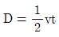
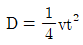
(정답률: 알수없음)
66. 수심측량 기준면에서 고려할 사항이 아닌 것은?
- 가능하면 해도 기준면과 일치시킨다.
- 해도 기준면 결정에 시간이 걸리면 임시로 수심측량
- 해도 기준면은 정상적인 기하상에는 해도수심만으로 안전항해할 수 있도록 연중 그 이하로 수위가 거의 내려가지 않는 면이어야 한다.
- 수심측량 기준면은 육상 수준망과는 별도로 구성된다.
(정답률: 알수없음)
67. 다음 중 전파 위치측량의 관측사항이 아닌 것은?
- 무선국간의 표고차
- 무선국간의 거리차
- 무선국간의 거리
- 무선국간의 방위
(정답률: 알수없음)
68. 다음 설명은 어떠한 보조점 관측법에 대한 설명인가?
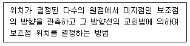
- 전방 교회법
- 후방 교회법
- 측방 교회법
- 직선 일각법
(정답률: 알수없음)
69. 다각측량 중 교각법의 설명이 아닌 것은?
- 관측오차는 각의 대.소에 따라 배분한다.
- 소요 정밀도에 따라 방향 및 반복법으로 측각 할 수 있다.
- 측점마다 독립해서 측각할 수 있다.
- 측각이 잘못 되었을 경우 다른각에 관계없이 다시 측각할 수 있다.
(정답률: 알수없음)
70. 해안선을 결정하는데 사용되는 방법이 아닌 것은?
- 삼각측량
- 다각측량
- 수위관측
- 초음파
(정답률: 알수없음)
71. 다음 중 정오차에 속한 것은?
- 기온의 변화로 기계의 수축, 팽창에 의한 오차
- 바람에 의한 기계의 진동으로 생기는 오차
- 삼각의 부동침하에 의한 오차
- 관측도중 기계의 조정이 불량할때 오차
(정답률: 알수없음)
72. 항공사진에서 수직사진이란 경사각이 몇 도 이내인 것을 말하는가?
- 4.5°
- 8°
- 9°
- 10°
(정답률: 알수없음)
73. 다음 중 항공사진의 특수 3점이 아닌 것은?
- 보조점
- 주점
- 연직점
- 등각점
(정답률: 알수없음)
74. 해저가 모래인 경우 등심선이 1m일 때 축심선의 간격은 어느 것인가?
- 10m
- 50m
- 80m
- 100m
(정답률: 알수없음)
75. 원격탐측에 대한 설명으로 옳지 않은 것은?
- 탐사된 자료가 즉시 이용될 수 있으며 재해 및 환경문제 해결에 편리하다.
- 관측이 좁은 시야각으로 실시되므로 얻어진 영상은 정사투영상에 가깝다.
- 짧은시간내에 넓은 지역을 동시에 측정할 수 있으며 반복측정이 어렵다.
- 원격측정은 회전주기가 일정하므로 원하는 지점 및 시기에 관측하기가 곤란하다.
(정답률: 알수없음)
76. 해수중에서 음파를 수직으로 방사하여 해저에 도달 후 반사되어 3.2초 후에 도달하였을 때 이 지점의 수심은? (단, 해중 음파속도는 1500m/sec이다.)
- 2,100m
- 2,200m
- 2,300m
- 2,400m
(정답률: 알수없음)
77. 다음 설명 중 옳지 않은 것은?
- 수심측량은 수심을 체계적인 방법으로 관측하여 해저지형 기복을 알아내기위한 측량이다.
- 오늘날 거의 대부분의 수심측량은 음향측심(echo sounding)에 의해 이루어진다.
- 수심이 깊고, 수질이 불투명한 해역에서는 항공사진 또는 수중사진을 이용한다.
- 레이저에 의한 방법은 초음파보다 분해능이 높다.
(정답률: 알수없음)
78. 다음 중 GPS의 구성이 아닌 것은?
- 우주부분
- 관제부분
- 이용자부분
- 계산부분
(정답률: 알수없음)
79. 다음 중 일반적으로 수심 약 200m 까지의 저질에 주로 포함되는 것이 아닌 것은?
- 점토
- 모래
- 자갈
- 규조연니
(정답률: 알수없음)
80. 해도 중 바다의 기본도는 3종류의 축척을 가진다. 다음 중 관계없는 축척은 어느 것인가?
- 1 : 200,000
- 1 : 50,000
- 1 : 100,000
- 1 : 10,000
(정답률: 알수없음)
5과목: 재료공학
81. 해양 철근 콘크리트 구조물의 경우에 콘크리트를 배합설계할 때 내구성으로 부터 물· 시멘트비(W/C)를 결정하는 경우 얼마를 표준으로 하는가? (단, 조석간만의 작용을 받거나 해수로 씻기워지기 쉽고 동결 융해가 자주반복되는 지역에 위치하는, 두께 20cm이하의 얇은 구조물이다.)
- 45% 이하
- 45% 이상
- 55% 이하
- 55% 이상
(정답률: 알수없음)
82. 지름 10cm, 길이 20cm인 시편에 30 ton의 압축력이 작용하면 이 시편은 얼마나 줄어드는가? (단, 시편의 탄성계수 E=2.1× 106kg/cm2이다.)
- 0.0465 mm
- 0.0364 mm
- 0.0314 mm
- 0.0182 mm
(정답률: 알수없음)
83. 다음 그림과 같은 단면재료에 1,500kg/cm2의 인장응력과 900kg/cm2의 압축응력이 서로 직각으로 작용할 때 인장응력이 작용하는 면과 30°의 각도를 이루는 경사면에 연직한 응력 σn을 구하면 몇 kg/cm2이 되는가?
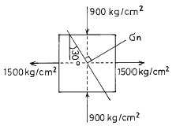
- σ n=700kg/cm2
- σ n=600kg/cm2
- σ n=900kg/cm2
- σ n=1,200kg/cm2
(정답률: 알수없음)
84. 다음 곡선은 연강의 인장시험으로 얻은 응력-변형 곡선이다. C점의 재료의 강도를 무엇이라고 하는가?
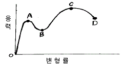
- 파단강도
- 항복강도
- 인장강도
- 압축강도
(정답률: 알수없음)
85. 콘크리트의 탄성계수를 결정하는 가장 밀접한 요인은?
- 단위 시멘트량
- 물· 시멘트비(W/C)
- 잔골재율(S/a)
- 콘크리트 28일 압축강도
(정답률: 알수없음)
86. 응력 상태가 반복되는 경우 정적하중 하에서의 최후 강도보다 낮은 응력에서 그 재료가 파괴가 일어난다. 이러한 파괴를 무엇이라 하는가?
- 연성파괴
- 취성파괴
- 피로파괴
- 전단파괴
(정답률: 알수없음)
87. 그림과 같은 직4각형 단면에서 x-x축에 대한 단면 2차 모멘트는 어떻게 표현할 수 있는가?
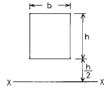
- (13/12)bh3
- bh3/3
- (15/12)bh3
- (7/12)bh3
(정답률: 알수없음)
88. 다음 중에서 해양콘크리트 구조물에 사용되는 재료가 필요로 하는 가장 중요한 성질은?
- 내화성
- 강도(압축, 인장, 전단등)
- 시공성
- 내구성
(정답률: 알수없음)
89. 다음 금속재료에 대한 설명 중 옳지 않은 것은?
- 열과 전기의 전도율이 비교적 작으며 독특한 광택을 가진다.
- 비중이 크며 다른 금속과 용해되어 합금되는 성질을 가진다.
- 금속재료란 금속과 합금 등을 말하며 대부분 상온에서 고체의 결정을 가진다.
- 일반적으로 강도, 탄성계수, 인성, 연성 등이 크며 가공하기 쉽다.
(정답률: 알수없음)
90. 콘크리트를 반죽할 때 사용하는 물에 대한 다음 설명 중 틀린 것은?
- 물은 특별한 맛, 냄새, 빛깔, 탁도 등이 없는 깨끗한 것이어야 한다.
- 물은 기름, 산, 유기물 등의 유해량을 함유해서는 안된다.
- 해수를 사용하면 응결과 초기강도가 약간 많아지나 장기적으로는 오히려 작아진다.
- 해상에서 콘크리트를 시공할 경우 해수를 사용해도 철근 및 PS 콘크리이트 등에서는 관계없다.
(정답률: 알수없음)
91. 탄성계수 E, 포와송비 ν 및 진단 탄성계수 G의 관계식을 올바르게 나타낸 것은?
- E=G(1+ν )
- E=G(1+2ν )
- E=2G(1+ν )
- E=2G(1+2ν )
(정답률: 알수없음)
92. 다음 중 해양구조물의 피로강도에 미치는 영향인자가 아닌 것은?
- Notch의 효과
- 치수의 효과
- 부식 및 온도의 효과
- 경화효과
(정답률: 알수없음)
93. 콘크리트속에 묻힌 철근의 부식을 방지하는 방법 중 가장 옳은 것은?
- 염화칼슘을 혼화제로 사용한다.
- 다공질의 자갈 또는 부순돌을 많이 사용한다.
- 적당한 두께의 콘크리트 피부두께를 한다.
- 된 반죽 콘크리트를 사용한다.
(정답률: 알수없음)
94. 재료에 지속하중이 장시간에 걸쳐 작용할 때 시간의 경과와 함께 변형이 증가하는 현상을 무엇이라 하는가?
- 크리프
- 항복
- 피로
- 탄성
(정답률: 알수없음)
95. 각종 금속의 부식을 방지하기 위해 페인트로 도포할 때의 필요한 성질을 설명한 것 중 잘못된 것은?
- 습기나 공기를 통과시키면 안된다.
- 내구성이 커야 한다.
- 탄력성이 없어야 한다.
- 마찰이나 충격에 대한 저항성을 가져야 한다.
(정답률: 알수없음)
96. 해수의 작용을 받는 콘크리트의 내구성에 관한 설명 중 잘못된 것은?
- 해수의 화학적 침식에 저항하려면 중용열 시멘트나 혼합시멘트를 사용하거나 수밀성이 큰 AE 콘크리트로 만들면 좋다.
- 해수 중의 콘크리트는 동결, 융해의 영향을 받고 파랑 등에 의해 파괴되므로 경량 콘크리트로 만들면 좋다.
- 해수 중의 콘크리트는 강도가 크고 치밀해야하며 철근 콘크리트에서는 철근을 충분히 보호할 수 있는 좋은 품질의 콘크리트이어야 한다.
- 콘크리트속의 석회, 알루미나, 석고 등이 해수중의 황산마그네시아 등과 반응하여 결정수를 갖는 복염을 만들므로 콘크리트는 침식한다.
(정답률: 알수없음)
97. 다음 재료의 경도측정 방법 중 압입경도 측정방법이 아닌 것은?
- 스크래치 경도(Scratch hardness)
- 브리넬 경도(Brinell hardness)
- 누우프 경도(Knoop hardness)
- 록크웰 경도(Rockwell hardness)
(정답률: 알수없음)
98. 금속재료(철강재료)의 인장시험에서 구할 수 없는 것은?
- 인장강도
- 전단강도
- 연신율
- 단면수축율
(정답률: 알수없음)
99. 다음 수중 불분리성 콘크리트에 관한 설명 중 적절하지 않은 것은?
- 충전성을 높이고 유동성을 좋게하기 위해 고유동화제의 사용이 필요하다.
- 재료의 배합시 건 비빔이 필요하다.
- 일반 콘크리트에 비해 응결이 빨리 진행되므로 적정량의 응결 지연제가 필요하다.
- 강제식 믹서의 경우 비비는 시간은 90∼180초 정도가 적절하다.
(정답률: 알수없음)
100. 다음 콘크리트의 인장강도, 휨강도에 대한 설명 중 잘못된 것은?
- 콘크리트의 인장강도는 일반적으로 압축강도의 1/10~1/13 정도로 철근콘크리트 설계에서는 무시한다.
- 인장시험용 공시체는 압축시험용 공시체와 같고 인장강도의 크기는 ft = P/π dℓ 로 구한다. (d는 공시체지름, ℓ 은 높이)
- 인장강도는 콘크리트를 건조시키면 습윤한 콘크리트 보다 저하된다.
- 콘크리트 휨강도는 압축강도의 1/5∼1/8정도이고 휨 강도의 크기는 fb= M/Z에서 계산한다. (Z는 공시체의 단면계수이다.)
(정답률: 알수없음)